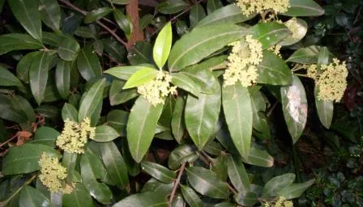
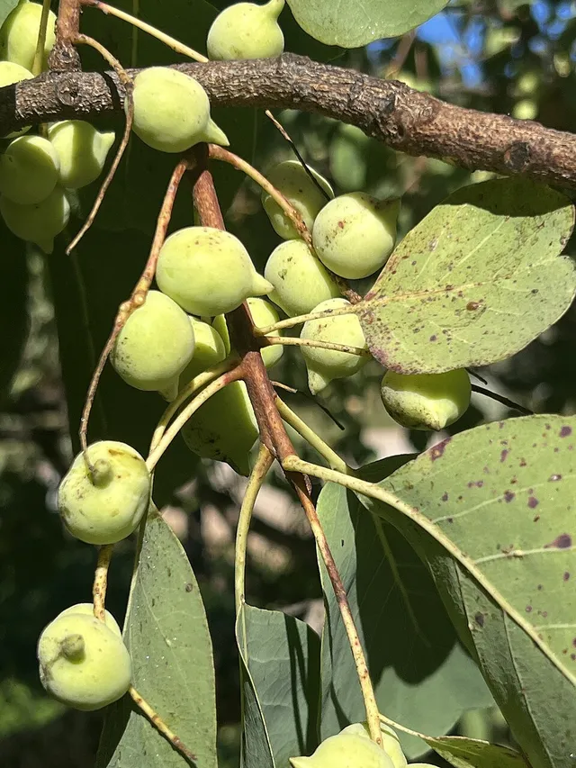
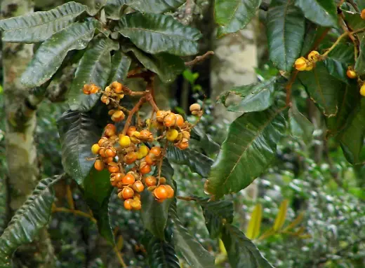
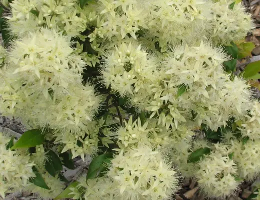
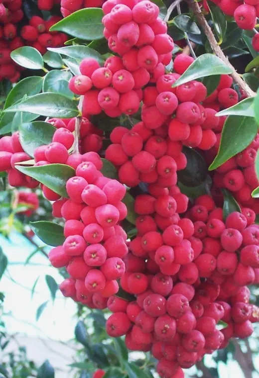
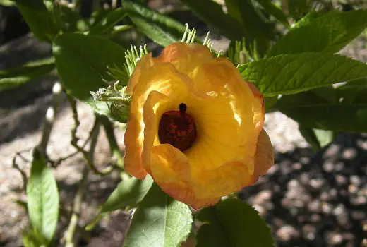
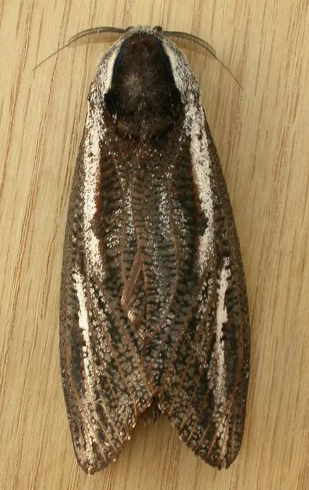
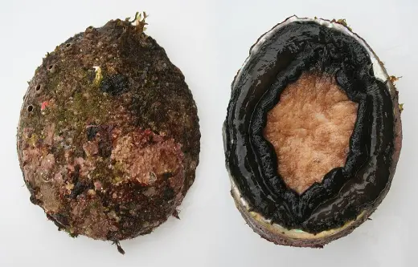

Wild food recipes from Australia
48 dishes made with foraged ingredients, from drinks and preserves to mains and desserts.
Drinks

Lemon myrtle iced teaLemon myrtle Lilly pilly cordialLilly pilly
Lilly pilly cordialLilly pilly Desert lime cordialDesert lime
Desert lime cordialDesert lime
Kakadu plum juiceKakadu plum River mint teaRiver mint
River mint teaRiver mint
Native tamarind cordialNative tamarind Lemon aspen spritzLemon aspen
Lemon aspen spritzLemon aspen
Aniseed myrtle teaAniseed myrtle Strawberry gum iced teaStrawberry gum
Strawberry gum iced teaStrawberry gum Lemon tea tree teaLemon-scented tea tree
Lemon tea tree teaLemon-scented tea tree
Starters & snacks
 Oysters with finger limeFinger lime
Oysters with finger limeFinger lime Saltbush chipsOld man saltbush
Saltbush chipsOld man saltbush Roasted bunya nutsBunya nut
Roasted bunya nutsBunya nut Steamed mussels with river mintMussels, River mint
Steamed mussels with river mintMussels, River mint
Kangaroo skewers with riberry glazeRiberry Oysters with lemon aspenSydney rock oysters, Lemon aspen
Oysters with lemon aspenSydney rock oysters, Lemon aspen Pipis in XO saucePipis
Pipis in XO saucePipis Sea urchin on toastPurple sea urchin
Sea urchin on toastPurple sea urchin
Sauces, preserves & sides
 Davidson's plum jamDavidson's plum
Davidson's plum jamDavidson's plum Quandong chutneyQuandong
Quandong chutneyQuandong Warrigal greens pestoWarrigal greens
Warrigal greens pestoWarrigal greens Pickled samphireSamphire
Pickled samphireSamphire Illawarra plum sauceIllawarra plum
Illawarra plum sauceIllawarra plum- Riberry jamRiberry
 Sea celery salsa verdeSea celery
Sea celery salsa verdeSea celery
Native rosella jamNative rosella Home-cured olivesFeral olive
Home-cured olivesFeral olive Nasturtium capersNasturtium
Nasturtium capersNasturtium
Main course
- Warrigal greens and feta pieWarrigal greens
- Saltbush lambOld man saltbush
 Bush tomato kangarooDesert raisin, Mountain pepper
Bush tomato kangarooDesert raisin, Mountain pepper Barramundi in native ginger leafNative ginger, Lemon myrtle
Barramundi in native ginger leafNative ginger, Lemon myrtle
Witchetty grubs on coalsWitchetty grub
Seared abaloneAbalone Pine mushrooms with garlicSaffron milk cap
Pine mushrooms with garlicSaffron milk cap Slippery jack ragùSlippery jack
Slippery jack ragùSlippery jack
Breads & baking
 Wattleseed damperWattleseed
Wattleseed damperWattleseed- Lemon myrtle shortbreadLemon myrtle
 Midyim berry muffinsMidyim berry
Midyim berry muffinsMidyim berry Munyeroo seed damperMunyeroo · Purslane
Munyeroo seed damperMunyeroo · Purslane
 Macadamia and wattleseed ice creamMacadamia, Wattleseed
Macadamia and wattleseed ice creamMacadamia, Wattleseed Muntrie crumbleMuntries
Muntrie crumbleMuntries Burdekin plum jamBurdekin plum
Burdekin plum jamBurdekin plum Apple berry crumbleApple berry
Apple berry crumbleApple berry